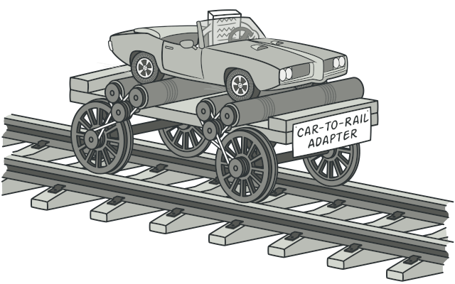

Адаптер
Суть паттерна
Адаптер — это структурный паттерн проектирования, который позволяет объектам с несовместимыми интерфейсами работать вместе.
Проблема
Представьте, что вы делаете приложение для торговли на бирже. Ваше приложение скачивает биржевые котировки из
нескольких источников в XML, а затем рисует красивые графики.
В какой-то момент вы решаете улучшить
приложение, применив стороннюю библиотеку аналитики. Но вот беда — библиотека поддерживает только формат
данных JSON, несовместимый с вашим приложением.
Вы смогли бы переписать библиотеку, чтобы та поддерживала
формат XML. Но, во-первых, это может нарушить работу существующего кода, который уже зависит от библиотеки.
А во-вторых, у вас может просто не быть доступа к её исходному коду.
Решение
Вы можете создать адаптер. Это объект-переводчик, который трансформирует интерфейс или данные одного объекта
в такой вид, чтобы он стал понятен другому объекту.
При этом адаптер оборачивает один из объектов, так
что другой объект даже не знает о наличии первого. Например, вы можете обернуть объект, работающий в метрах,
адаптером, который бы конвертировал данные в футы.
Адаптеры могут не только переводить данные из одного
формата в другой, но и помогать объектам с разными интерфейсами работать сообща. Это работает так:
- Адаптер имеет интерфейс, который совместим с одним из объектов.
- Поэтому этот объект может свободно вызывать методы адаптера.
- Адаптер получает эти вызовы и перенаправляет их второму объекту, но уже в том формате и последовательности, которые понятны второму объекту.
Иногда возможно создать даже двухсторонний адаптер, который работал бы в обе стороны.
Таким образом, в приложении биржевых котировок вы могли бы создать класс XML_To_JSON_Adapter, который бы оборачивал объект того или иного класса библиотеки аналитики. Ваш код посылал бы адаптеру запросы в формате XML, а адаптер сначала транслировал входящие данные в формат JSON, а затем передавал бы их методам обёрнутого объекта аналитики.
Аналогия из жизни
Когда вы в первый раз летите за границу, вас может ждать сюрприз при попытке зарядить ноутбук. Стандарты розеток в разных странах отличаются. Ваша европейская зарядка будет бесполезна в США без специального адаптера, позволяющего подключиться к розетке другого типа.